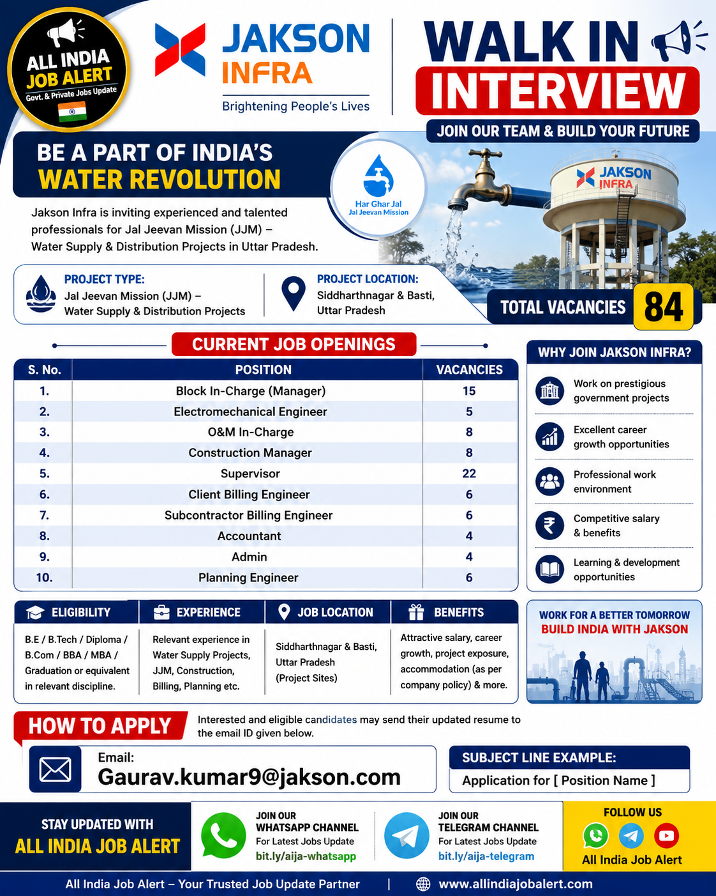

Company: Jakson Infra
Project: Jal Jeevan Mission (JJM)
Location: Siddharthnagar & Basti, Uttar Pradesh
Total Vacancies: 84

Candidates with B.E., B.Tech, Diploma, B.Com, BBA, MBA, Graduation or equivalent qualifications in Civil, Mechanical, Electrical, Electromechanical or other relevant disciplines are eligible depending on the position. Relevant experience in Water Supply Projects, Jal Jeevan Mission (JJM), Construction, Infrastructure, Billing or Planning will be preferred.
Selected candidates will work on Jal Jeevan Mission (JJM) Water Supply & Distribution Projects in Uttar Pradesh. Responsibilities include project execution, construction supervision, quality control, electromechanical maintenance, billing, planning, administration, documentation, project monitoring, contractor coordination and ensuring timely completion of work according to company and client standards.
Salary will be based on qualification, experience and interview performance. Jakson Infra offers competitive salary packages, career growth opportunities, professional learning, project exposure, accommodation or project benefits (where applicable) and other facilities as per company policy.
Selected candidates will be posted at Jal Jeevan Mission (JJM) Water Supply & Distribution Project sites in Siddharthnagar and Basti, Uttar Pradesh. Depending on project requirements, employees may also be assigned to other Jakson Infra project locations.
Interested and eligible candidates should send their updated resume to the official HR email address. Include your educational qualifications, work experience, current salary, expected salary, notice period and current location. Mention the position name in the email subject for faster processing.
Email: Gaurav.kumar9@jakson.com
Subject Example: Application for Planning Engineer
Candidates with the required qualification and relevant experience for the advertised positions can apply.
The project is located in Siddharthnagar and Basti, Uttar Pradesh under the Jal Jeevan Mission (JJM).
Send your updated resume to Gaurav.kumar9@jakson.com with the post name in the email subject.
Only eligible candidates should apply. Ensure your resume contains accurate educational qualifications, work experience and contact details. Shortlisted candidates will be contacted by the recruitment team.
Join our WhatsApp and Telegram channels for the latest Private Jobs, Government Jobs, Engineering Jobs, Civil Jobs and Walk-In Interview updates across India.
📲 Join WhatsApp Channel